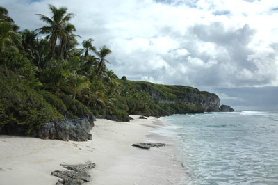
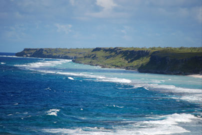
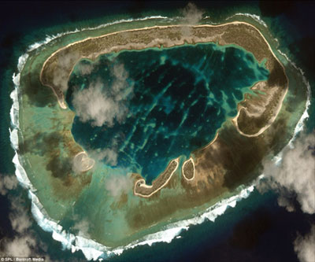
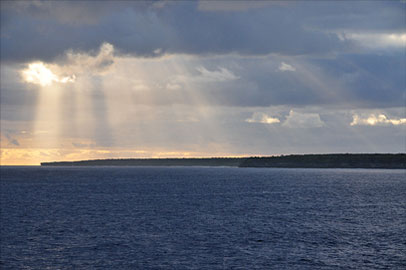
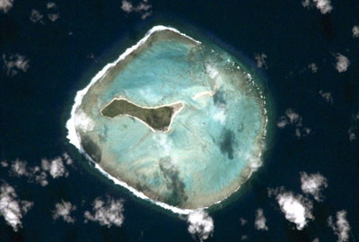

Reaching Nearby islands highly depends on weather conditions and although being the nearest islands some take several days to reach. There is no guarantee you will be able to land ashore and the same goes for leaving. Also be aware that all these islands are unhabited
- Henderson Island
-
The largest island in the Pitcairn Group is Henderson Island which is of outstanding scientific value. Being the world´s best example of an uninhabited elevated coral atoll ecosystem, Henderson Island gained World Heritage Site status in 1993.
- 
-
- 
It is home to two endemic fish species, four unique endemic land birds and a global stronghold of oceanic gadfly petrels. Henderson Island also hold nine endemic plant species, eight endemic snail species, dozens of unique invertebrates and a crucial nesting habitat for the endangered Green turtle.
- Ducie Island
-
Ducie Island is an uninhabited atoll in the Pitcairn Islands. It lies 470 km east of Pitcairn and has a total area of 4 km2, which includes the lagoon. It is 2 km long, measured northeast to southwest, and about 1.6 km wide. The island is composed of four islets: Acadia, Pandora, Westward and Edwards.
- 
- 
-
Despite its sparse vegetation, the atoll is known as the breeding ground of a number of bird species. More than 90% of the world population of Murphy's Petrel nests on Ducie, while pairs of Red-tailed Tropicbirds and Fairy Terns make around 1% of the world population for each species.
Ducie was first discovered in 1606 by Pedro Fernandes de Queirós, who named it Luna Puesta, and rediscovered by Edward Edwards, captain of HMS Pandora, who was sent in 1790 to capture the mutineers of HMS Bounty. He named the island Ducie in honour of Francis Reynolds-Moreton, 3rd Baron Ducie. In 1867 it was claimed by the United States under the Guano Islands Act, but the United Kingdom annexed it on 19 December 1902 as part of the Pitcairn Islands. Due to its inaccessibility and the distance from Pitcairn Island, Ducie is rarely visited today.
- Oeno Atoll
-
Located 143 kilometres northwest of Pitcairn Island Oeno Atoll measures about 5 kilometres in diameter, including the central lagoon, with a total area exceeding 20 square kilometres. There are two larger and three smaller islets on or within the rim of the atoll. Their aggregate land area is only 0.69 square kilometres. Oeno Island serves as a private holiday site for the few residents of Pitcairn Island, who will travel there and stay for two weeks in January.
- 
air view of Oeno 
Oeno Beach-
The main island , about 0.5 square kilometres in area, has forest and scrub with pandanus and palm trees. It is located in the southwest part of the atoll's lagoon. There is a water tap installed on the island.The maximum elevation is less than 5 metres . Sandy Island is to the northeast and may be an ephemeral island. Three smaller islets are to the south and west of the main island.